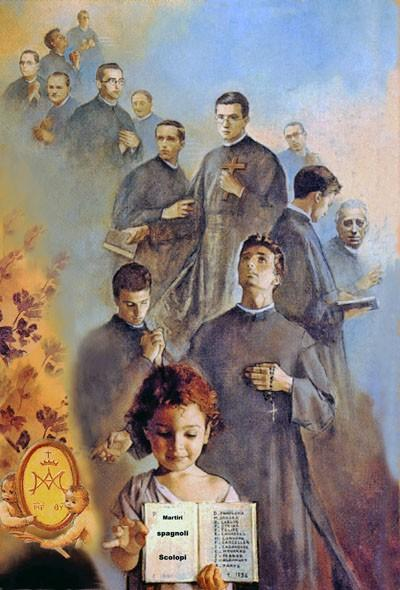

Legado de Dionisio Pamplona
La Educación y la Fe
La Educación: dedicó gran parte de su vida a enseñar y formar.
La Fe: mantuvo su actividad religiosa y permaneció unido a sus responsabilidades.

El Servicio
El Servicio: fue maestro, rector, párroco y formador, vinculado al carisma de San José de Calasanz y a la educación cristiana.